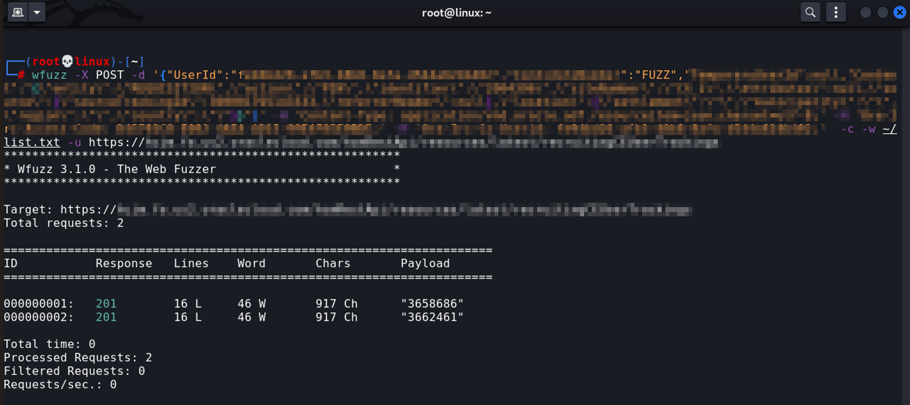
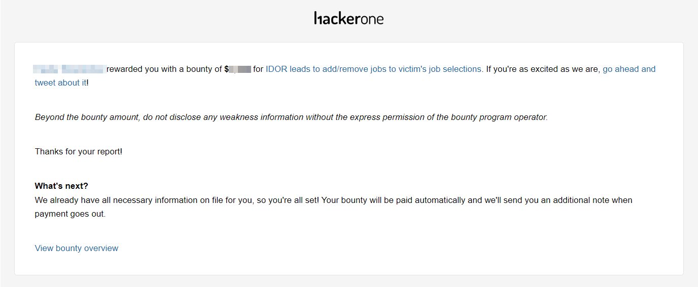

Broken Access Control: IDOR
Title : IDOR leads to add/remove jobs to victim's job selections Weakness : Broken Access Control - IDOR Severity : Medium Impact : An Attacker can add/remove jobs to victim's job selections Steps To Reproduce: 1. Register two accounts (attacker & victim) 2. Login to attacker account 3. Click add job button to add job to job selection 4. Now change the "ConId" parameter to victim number 5. In the response you will find "UUID" for victim account 6. Now add the "ConId" and "UUID" for victim account and you successfully add/remove jobs to victim's job selections Reference: 1. https://portswigger.net/web-security/access-control/idor 2. https://owasp.org/Top10/A01_2021-Broken_Access_Control


